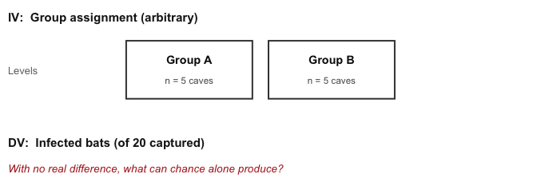
4 Inference and Hypothesis Testing
Data and data sets are not objective; they are creations of human design. We give numbers their voice, draw inferences from them, and define their meaning through our interpretations.
Kate Crawford
Inferential statistics (Chapter 3) is the branch of statistics concerned with drawing conclusions about populations or causal relationships from sample data. It answers questions such as whether a manipulation caused a change, or whether a gap in infected-bat counts between two groups of caves could have arisen by random chance alone.
Chapter 3 built the sampling distribution of the sample mean and used it to estimate a confidence interval. This chapter uses the same tools to test a hypothesis, in two parts. The first part builds the logic by simulation, with no formulas. We work out what chance alone can produce, then compare a result against it. The rest of the chapter replaces the simulation with a standard hypothesis test. Once you can assume a known shape for what chance produces, such as the normal curve, you no longer have to rebuild that picture by simulation every time.
4.1 What chance alone can produce
An experiment asks whether a manipulation causes a change in what we measure. Some manipulations are so overwhelming that no statistics are required to see them. Flip a light switch up and the light comes on; flip it down and it goes off, every time. You don’t need a statistical test to tell you that flipping the light switch is the cause of the change in brightness.
Few effects in environmental science behave like this. An effect is the difference a study is about, such as the change a manipulation causes in the outcome. In measurements that also contain noise, the effect is the signal. In most environmental studies, the manipulation changes the outcome on average, but not in every instance and not by the same amount every time.
Random chance can produce apparent differences between groups even when no real difference exists. Chapter 3 showed this with sampling. Two samples from the same distribution come out differently. The same principle applies when we compare group means. So a difference between group means is not, by itself, evidence of a real effect.
Table 4.1 lists the three possible explanations whenever two group means differ.
| Explanation | What produced the difference |
|---|---|
| Real effect | The manipulation caused it. |
| Confound | A third variable that affects both which group a unit is in and the outcome (Chapter 2). |
| Sampling error | Chance. Which units happened to land in each group, including differences in variables that affect the outcome but not which group a unit is in. |
Consider a scenario where we expect to find no real difference. A researcher surveys 10 caves for white-nose syndrome, a fungal disease that has killed millions of North American bats, capturing 20 bats at each cave and counting how many show visible signs of infection. Figure 4.1 lays out the design.
All 10 caves are drawn from the same population. There is no treatment, no environmental gradient, nothing systematic separating them, so the true infection rate is identical everywhere. In this example every cave has the same 40% infection rate, so on average 8 of the 20 bats captured at a cave show signs of infection. The counts in the figures below are simulated from that rate. We chose the 40%, and chance produced everything else. Splitting the 10 caves into two groups of 5 is arbitrary. Any difference we see between those groups therefore has to be sampling error, so this scenario shows what chance alone can produce.
Figure 4.2 shows one run of this scenario: the mean number of infected bats in each group.
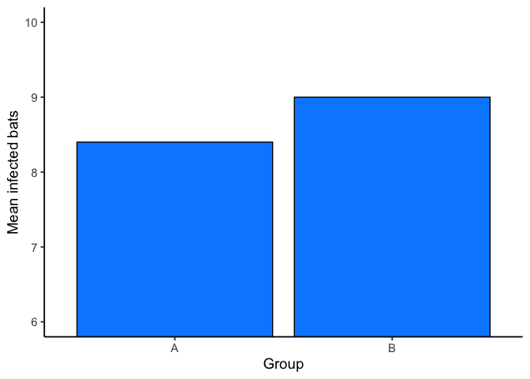
Group A and Group B have different mean counts, 8.4 and 9.0 infected bats. Both groups were drawn from the same population of caves, with the same infection risk, so the gap is sampling error.
Differences appear even when nothing real caused them, so we need a way to tell whether an observed difference is real or the result of chance.
Chapter 2 built a chance window for correlations by repeating a random draw 1,000 times. We can build one for group means the same way, by running the same arbitrary split many times and recording each result. The mean difference is the mean count for Group A minus the mean count for Group B. We summarize each run with this one number. One replication is one complete rerun of the survey. It samples all 10 caves from the same population, splits them 5 and 5, and computes the two group means. Figure 4.3 shows the mean differences for 10 replications.
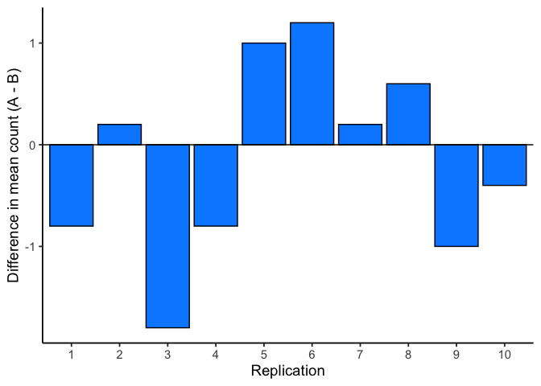
A bar at zero means the two groups had the same mean count in that replication. Positive values indicate Group A was higher; negative values indicate Group B was higher. Chance produces a new difference every time, but across these 10 replications no difference was larger than 1.8 bats in either direction. To see which sizes are common and which are rare, we run 10,000 replications and plot the mean differences as a histogram.
Before you look. Each replication gives one mean difference, the Group A mean minus the Group B mean. The height of a bar in Figure 4.4 counts how many of the 10,000 replications produced a difference of that size. Decide where you expect the tallest bar to be, and how far from zero you expect the differences to reach.
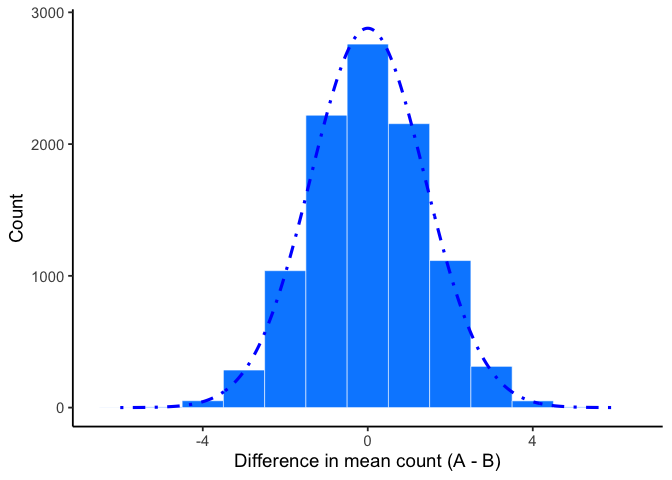
Most replications produced a difference near zero, so the tallest bar is the one at zero. Larger differences in either direction occur less and less frequently, and differences beyond about \(\pm 3\) are possible, but only 2.6% of the 10,000 replications produced one. The chance window for a study design is the distribution of results that chance alone produces when the study is repeated many times with no real effect (Chapter 2). This histogram is the chance window for this study design.
We can use this window to evaluate any observed difference. If a study found a difference of 1 infected bat between two groups, that falls well inside the range of differences chance produced, because 52% of the 10,000 replications produced a difference at least that large. If the study found a difference of 6 bats, that would fall outside the window. Chance never produced a difference that large in 10,000 replications. When an observed result almost never happens by chance, we have grounds to conclude that something other than chance produced it.
NoteNote: Which direction?
Still probability, model → data. The chance window starts from a world we chose, every cave at the same infection rate, and shows the differences that world produces. The 1-bat and 6-bat results above are hypothetical, used to show what the window can tell us. No real study’s data have entered yet.
4.2 Chance vs. not chance
Where to draw the line between “chance could have” and “chance didn’t” is a judgment call. The window tells us what chance can do, but it does not tell us where that line goes.
Figure 4.5 draws lines on the same bat histogram from above. The boundaries are the smallest and largest differences chance actually produced across the 10,000 replications.
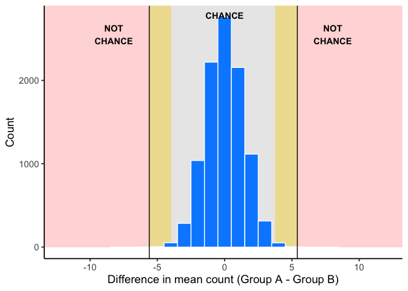
Across the 10,000 replications, chance produced differences from about -5.6 to 5.4 bats.
- Chance (gray). Chance produced differences like this routinely, so there is no reason for suspicion.
- Ambiguous (gold). The gold zones are the edges of what chance produced. Chance can produce differences this large, but rarely, so chance is unlikely here but not ruled out.
- Not chance (red). Chance never produced a difference this large in 10,000 replications, which gives grounds to suspect something beyond sampling error.
4.2.1 How rare is rare enough?
Environmental scientists already describe rarity with the 100-year flood. A 100-year flood is a flood with about a 1-in-100 chance of happening in any given year. It does not arrive once a century on a schedule. Table 4.2 follows that chance over a 30-year mortgage and sets it beside a much rarer flood, one with a 1-in-10,000 annual chance. The second column is \(1 - (1 - \text{annual chance})^{30}\), the chance that at least one of the 30 years has the flood.
| Annual chance | Chance of at least one in 30 years |
|---|---|
| 1 in 100 (1%) | 26% |
| 1 in 10,000 (0.01%) | 0.3% |
A 1% annual chance adds up to roughly a 26% chance of at least one such flood over the mortgage. A 1-in-10,000 annual risk stays under 0.3% over the same 30 years.
Rare events still happen, as the 26% chance over a 30-year mortgage shows. A difference in the gold zone of Figure 4.5 can also occur by chance, and how rare it is changes what we are willing to conclude from it.
Where the gold zone ends is a judgment call. A stricter line means fewer false alarms, where we conclude there is an effect when there is none, and more missed real effects. A looser line means the reverse. Researchers standardize that call with a convention, \(\alpha = 0.05\), defined later in this chapter. It is 1 in 20. Because 5% of 10,000 is 500, the most extreme 500 of the 10,000 replications would count as rare enough. That line is far looser than the red zone, which contains only differences chance never produced.
4.3 Hypothesis tests
4.3.1 The null and alternative hypotheses
The chance window described a world where nothing but chance is at work. A formal test gives that world a name. In the bat example, “nothing but chance” meant no real difference between groups.
Comparing two groups needs the tests in Chapter 6. From here on we compare a single sample against a specific value, such as a regulatory limit or a historical average. Later in this chapter, for example, a county compares its average daily PM2.5 with its target of 12 µg/m³.
The null hypothesis, \(H_0\), is the claim of no effect or no difference. In this chapter’s tests, it says the population mean equals a reference value, written \(\mu_0\), such as a target or the value with no manipulation. \(H_0\) is a statement about the population mean \(\mu\), and it never mentions the sample mean \(\bar{x}\). If \(H_0\) is true, any gap between \(\bar{x}\) and \(\mu_0\) is sampling error.
The alternative hypothesis, \(H_a\), is the claim that the population mean does not equal \(\mu_0\). It can also point in one direction only, larger or smaller. Section 4.5 covers when that is justified.
\[H_0:\ \mu = \mu_0 \qquad H_a:\ \mu \neq \mu_0\]
In the bat example, \(H_0\) would say the two groups of caves have the same population mean, \(\mu_A = \mu_B\).
Null value notation. In this chapter, hypotheses are about the population mean \(\mu\), compared with the constant \(\mu_0\). The sample mean \(\bar{x}\) is never part of \(H_0\) or \(H_a\). It is the evidence we bring to test them.
4.3.2 From simulation to a formal test
Everything so far was built by simulation: 10,000 replications, plotted as a histogram, with hypothetical results compared against it. Chapter 3 already supplies a shortcut that saves rebuilding a chance window for every question. Sample means have a predictable distribution of their own. At every sample size it is centered on the population mean, with spread \(\sigma/\sqrt{n}\). The central limit theorem adds that it is close to normal once the sample is large enough. That lets us replace the simulated chance window with a curve whose shape we already know.
We can check the shortcut on the bat histogram. The blue dot-dash curve drawn over it in Figure 4.4 is a normal curve with mean 0 and standard deviation 1.39, worked out from the 40% infection rate and the 5 caves per group. One cave’s count, 20 bats at a 40% infection rate, has standard deviation \(\sqrt{20 \times 0.4 \times 0.6} = \sqrt{4.8} = 2.19\), from the formula for the standard deviation of a binomial count, which this chapter uses only here. A 5-cave group mean then has standard error \(2.19/\sqrt{5} = 0.98\). The histogram shows a difference between two such means, and its spread is \(\sqrt{0.98^2 + 0.98^2} = 1.39\). Chapter 6 gives the general formula for the spread of a difference between two means. The curve follows the 10,000 simulated differences closely, so it could have replaced the simulation.
Table 4.3 lines up each piece of the simulation with the piece of the formal test that replaces it.
| Idea | Simulation (bat example) | Formal test |
|---|---|---|
| What chance alone produces | Histogram of 10,000 mean differences (Figure 4.4) | Sampling distribution of the sample mean under \(H_0\) |
| Where the line is drawn | Gold and red edges, set by eye | Critical values, set by \(\alpha\) |
| How rare our result is | Count of replications at least as extreme (0 of 10,000 for a 6-bat difference) | \(p\)-value |
| Verdict | Inside or outside the window | Reject or fail to reject \(H_0\) |
The bat histogram shows differences between two group means, and the formal test in this chapter uses a single sample mean. In both, an observed result is compared with what chance alone produces under \(H_0\).
The normal-curve shortcut works only when the sampling distribution of the sample mean is close to normal. A test uses that sampling distribution, and the population itself does not have to be normal. That distribution is close to normal once the sample is large enough, whatever the population’s shape (the central limit theorem). With a small sample, it is normal only if the population is roughly normal. The first check is the sample’s histogram, which should show no strong skew and no extreme outliers, and Chapter 6 adds more. When the checks fail, the nonparametric tests in Chapter 7 take over.
4.3.3 The players
A test is about \(\mu\), the true population mean, which we never observe. Everything we know about it comes from one sample. The null hypothesis proposes a value for it, \(\mu_0\). We reject \(H_0\) only if the sample mean, \(\bar{x}\), is farther from \(\mu_0\) than sampling error would plausibly produce if the null were true.
Several distributions and values take part in that comparison. Table 4.4 lists every one, with the line each is drawn with in this chapter’s figures. They fall into three groups: what we would expect if \(H_0\) were true, what the sample gives us, and the truth we never see.
| Line | Player | What it is | |
|---|---|---|---|
| If H0 were true | \(\mu_0\) | The population mean if \(H_0\) were true | |
| Null population distribution | The population if \(H_0\) were true: centered at \(\mu_0\), as wide as the population | ||
| Sampling distribution of the sample mean under \(H_0\) | How \(\bar{x}\) would vary across many samples if \(H_0\) were true: centered at \(\mu_0\), spread = standard error | ||
| From the sample | \(\bar{x}\) | The sample mean: the one value we observe | |
| Estimated population distribution | Centered at \(\bar{x}\), with the sample's standard deviation as its spread: our best picture of the true population | ||
| Sampling distribution of the sample mean | Our estimate of how sample means vary from sample to sample: centered at \(\bar{x}\) (our best guess for \(\mu\)), spread = standard error | ||
| Confidence interval | \(\bar{x} \pm 1.96\) standard errors, built from the sampling distribution of the sample mean from the sample | ||
| The truth | True population distribution | The population the data actually came from. Never known. \(H_a\) is a claim about where it is |
4.3.4 Seeing them together
The figures below draw the players a curve or two at a time.
The population curves in these figures are drawn as normal for clarity. As explained above, a test does not need them to be.
Notation reminder. Chapter 3 wrote a normal curve as \(X \sim \text{Normal}(\mu, \sigma)\), with the standard deviation second. From here on we use the more common shorthand \(X \sim N(\mu, \sigma^2)\), read “the random variable \(X\) is normally distributed with mean \(\mu\) and variance \(\sigma^2\).” A normal curve needs just those two numbers, a center and a spread. In this shorthand the second number is the variance, the square of the standard deviation. A population with mean 12 and standard deviation 6, for example, is \(N(12, 36)\).
1. The null population distribution.
The null population distribution is the population we would have if \(H_0\) were true. Its center, \(\mu_0\), comes from \(H_0\) itself, and Figure 4.6 draws it as a blue curve centered on the magenta line at \(\mu_0\). Its spread is the population standard deviation, \(\sigma\). In practice \(\sigma\) is almost never known, and analyses use the sample’s standard deviation, \(s\), in its place. This chapter treats \(\sigma\) as known to keep the first test simple. A known \(\sigma\) with an unknown \(\mu\) does happen, for example when years of daily readings from one air monitor show how much its readings vary and the question is whether this year’s mean has shifted. Chapter 6’s \(t\)-tests adjust for using \(s\) instead of \(\sigma\), and they are what analyses use in practice.
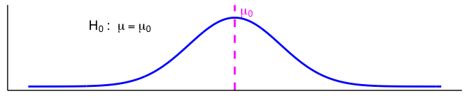
2. Null vs. true population.
In an idealized world where \(H_0\) is exactly true, the true population and the null population distribution are identical. In Figure 4.7 the blue null curve is drawn on top of the orange true population curve, so the two make a single bell shape. The true population distribution is the population the data actually came from. In reality, we never know it. \(H_a\) is a claim about this true population distribution, about where its mean might be.
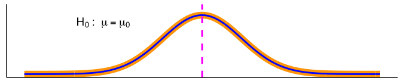
NoteNote: Which direction?
The switch to statistics, data → model. Steps 1 and 2 came from \(H_0\), a model we proposed. Step 3 starts from the sample we actually have and works back toward the population it came from.
3. The sample’s picture of the truth. We never see the true population, but we do have a sample. The estimated population distribution is a normal curve centered at the sample mean, \(\bar{x}\), with the sample’s standard deviation, \(s\), as its spread. It is our best picture of the true population. With a representative sample, the two line up closely, as the light-green dashed and orange curves do in Figure 4.8.
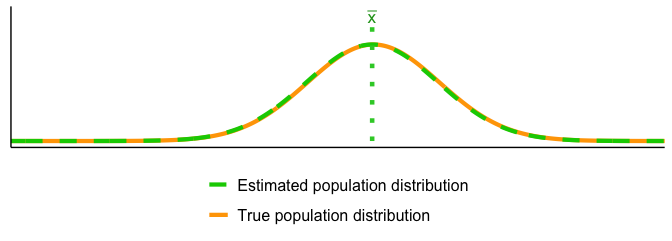
4. From individual readings to sample means. By the central limit theorem, the sampling distribution of the sample mean is close to a normal curve once the sample is large enough, so it needs only a center and a spread. This curve is our estimate of the Chapter 3 sampling distribution. That distribution is centered at \(\mu\), which we do not know, so the estimate is centered at \(\bar{x}\), the same as the estimated population. Its spread is the standard error, the population standard deviation divided by \(\sqrt{n}\) (Chapter 3). With real data we use the sample’s standard deviation, \(s\), so the standard error is \(s/\sqrt{n}\). The divisor is \(\sqrt{n}\), not \(\sqrt{n-1}\), because the \(n-1\) already went into computing \(s\) in Chapter 3. This chapter treats \(\sigma\) as known, so the standard error here is \(SE_{\bar{x}} = \sigma/\sqrt{n}\). In the shorthand, it is \(N(\bar{x}, SE_{\bar{x}}^2)\), with the same center as the estimated population and a much smaller spread.
Figure 4.9 then makes the population right-skewed while keeping its standard deviation. The skew leaves the spread of the sampling distribution unchanged at every \(n\), because that spread is still the standard deviation divided by \(\sqrt{n}\). Only the normal shape depends on the central limit theorem, and it needs a large enough sample.
![Animation. A wide light-green dashed bell curve centered on a lime-green dotted line labeled x-bar, labeled estimated population, center x-bar, spread s. A much narrower dark-green dot-dash curve appears at the same center, labeled sampling distribution of the sample mean, N of x-bar and S E sub x-bar squared, same center, spread S E sub x-bar equals sigma over the square root of n. The wide curve then gradually becomes mildly right-skewed, with a longer right tail, while the narrow dot-dash curve stays exactly the same; the final label reads same sampling distribution of the sample mean, once n is large enough.](imgs/gifs/ch4_step4.gif)
5. From the null population to sample means. The sampling distribution of the sample mean under \(H_0\) describes how \(\bar{x}\) would vary across many samples if \(H_0\) were true. It is \(N(\mu_0, SE_{\bar{x}}^2)\), centered at \(\mu_0\). Its spread is again the standard error, the null population’s standard deviation divided by \(\sqrt{n}\). With \(\sigma\) treated as known, this is the same standard error as in step 4. Figure 4.10 draws it as a blue dot-dash curve, much narrower than the null population distribution. The null population distribution shows how single readings would vary if \(H_0\) were true. The sampling distribution under \(H_0\) shows how sample means would vary, so it is narrower by a factor of \(\sqrt{n}\). It is the formal version of the chance window in Figure 4.4. The critical values later in the chapter come from it.
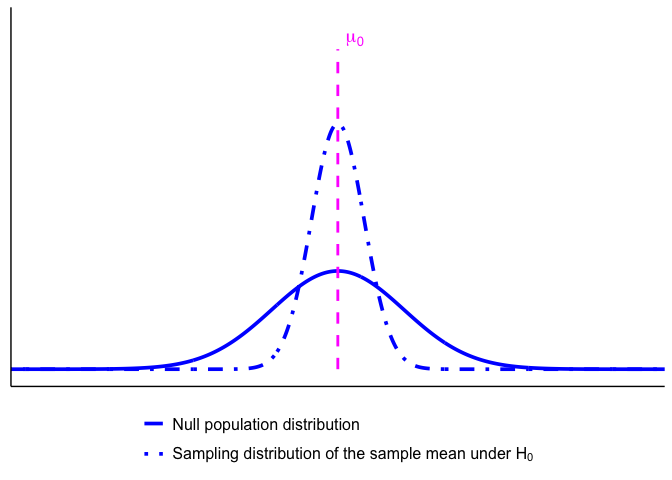
All of them at once. With every player on one set of axes the picture is crowded, so the rest of the book shows only the pieces a given question needs. Figure 4.11 adds them one at a time, grouped as in Table 4.4, and ends with all of them together.
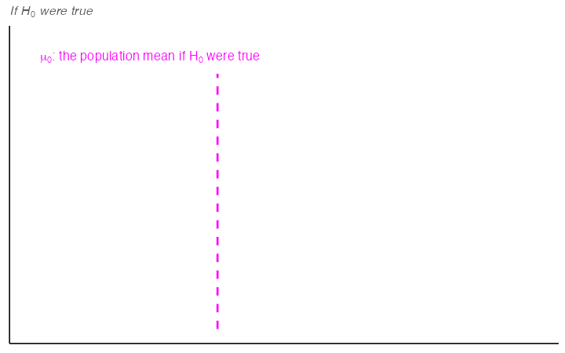
The two curves a decision uses. Figure 4.12 shows only the two sampling distributions of the sample mean. The two curves have the same spread, the standard error, and different centers. The one under \(H_0\) is centered at \(\mu_0\) and shows how \(\bar{x}\) would vary if \(H_0\) were true. The one from the sample is centered at \(\bar{x}\) and shows how sample means vary around our best guess for \(\mu\). The critical values and the \(p\)-value come from the first, and the confidence interval comes from the second.
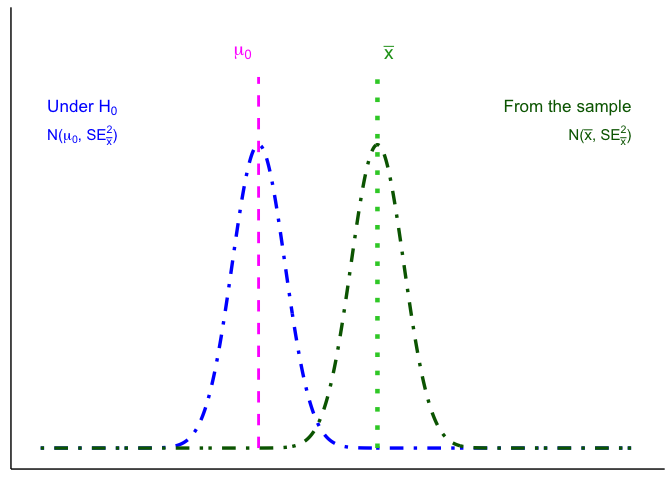
4.4 Making the decision
4.4.1 Terms for decision rules
Four terms guide the decision in a hypothesis test. The first is the quantity every test computes.
Test statistic. A test statistic is the effect you observed divided by how much it varies by chance. The observed effect is the distance between what you measured and what \(H_0\) predicted. It contains any true effect plus sampling error. The error is how much that distance varies by chance alone (in later chapters, an estimate of it):
\[\text{statistic}=\frac{\text{effect}}{\text{error}}\]
| Term | In this chapter |
|---|---|
| effect | \(\bar{x} - \mu_0\), the distance between the sample mean and the value \(H_0\) proposes |
| error | \(SE_{\bar{x}} = \sigma/\sqrt{n}\), how far sample means move around by chance alone |
Put together, this chapter’s test statistic is \(z\):
\[z = \frac{\bar{x} - \mu_0}{\sigma/\sqrt{n}}\]
Whether a sample mean 2 units from \(\mu_0\) is far from it depends on how much difference chance produces for a study with that sample size. The chance window measured exactly that earlier in this chapter. The test statistic writes that comparison as a single number, the number of standard errors the effect spans. The \(t\) and \(F\) tests later in the book are versions of the same ratio.
How the \(z\) statistic relates to Chapter 3’s \(z\)-score.
| Chapter 3: \(z\)-score for one value | This chapter: \(z\) statistic for a sample mean |
|---|---|
| \(z = \dfrac{x - \mu}{\sigma}\) | \(z = \dfrac{\bar{x} - \mu_0}{\sigma/\sqrt{n}}\) |
| How many SDs one value is from the population mean | How many SEs the sample mean is from \(\mu_0\) |
Both divide a distance by a spread, but the spread comes from a different distribution. A \(z\)-score places one value on the population distribution, where the spread is \(\sigma\). A \(z\) statistic places \(\bar{x}\) on the sampling distribution of the sample mean under \(H_0\), which is narrower, so the spread is \(SE = \sigma/\sqrt{n}\). Do not divide \(\bar{x} - \mu_0\) by \(\sigma\) instead of \(SE\). That uses the wide curve to answer a question about the narrow one, and it makes the statistic \(\sqrt{n}\) times too small.
A large statistic means the effect is big compared to the noise, and a small one means it is not. The rest of this section sets where to draw the line between a large statistic and a small one.
Significance level (\(\alpha\)). \(\alpha\) is the probability of rejecting \(H_0\) given that \(H_0\) is true, and we choose it before the test. It is a conditional probability, \(P(\text{reject } H_0 \mid H_0 \text{ true})\). Rejecting a true \(H_0\) is called a Type I error, and Chapter 5 covers error types. A common choice is \(\alpha = 0.05\). Smaller \(\alpha\) means a test needs a larger test statistic before it rejects \(H_0\). It also produces wider confidence intervals, because the confidence level is \(1 - \alpha\) (defined below). At \(\alpha = 0.01\), for example, the two-tailed critical value is 2.58 instead of 1.96, and the 99% interval is \(\bar{x} \pm 2.58\) standard errors.
\(p\)-value. A \(p\)-value is the probability, assuming \(H_0\) is true, of obtaining a test statistic at least as extreme as the one we observed. At least as extreme means at least as many standard errors from \(\mu_0\), counting both directions in a two-tailed test. Small \(p\) means our data look unusual under \(H_0\).
Confidence level. Confidence level is the proportion of confidence intervals that would contain the true parameter if we repeated the study many times, collecting new data and building a new interval each time.
\[\text{Confidence Level} = 1 - \alpha\]
With \(\alpha=0.05\), about 95% of intervals constructed this way will capture the true value. Chapter 3’s warning still applies, because the 95% describes the procedure and any one interval either contains \(\mu\) or misses it.
4.4.2 The procedure for every test
Every test in this book follows the same steps. Table 4.5 lists them, and the test cards in later chapters fill in steps 4 and 5 for each test.
| Step | What you do | Uses the data? |
|---|---|---|
| 1 | State \(H_0\) and \(H_a\), including whether the test is one- or two-tailed | No |
| 2 | Choose \(\alpha\) | No |
| 3 | Choose the test and check its assumptions | The checks do, but not the test result |
| 4 | Find the critical value(s) from \(\alpha\), the tails, and the test’s null distribution | Depends on the test. The \(z\)-test does not |
| 5 | Calculate the test statistic | Yes |
| 6 | Compare the statistic with the critical value(s). Reject \(H_0\) if it falls in the rejection region, otherwise fail to reject | Uses step 5 |
| 7 | Report the effect with its 95% CI, the test statistic, and \(p\) | Uses step 5 |
For the \(z\)-test, step 4 needs nothing from the data. The critical values are the standard normal cutoffs from Chapter 3. The 68-95-99.7 rule puts about 95% of a normal distribution within 2 standard deviations of its center, and the exact cutoff is 1.96, so at \(\alpha = 0.05\), two-tailed, the critical values are \(\pm 1.96\) for every \(z\)-test. Later tests look up their critical values the same way, from the \(t\), \(F\) or \(\chi^2\) distribution with the df the design gives.
Software reports \(p\) instead of critical values. Comparing \(p\) with \(\alpha\) replaces steps 4 and 6 and gives the same decision, as Route 3 below shows.
4.4.3 Three equivalent ways to test \(H_0\)
All three routes use the same two numbers, the distance \(\bar{x} - \mu_0\) and the standard error.
Test statistic / critical values. A critical value is the value of the test statistic that cuts off the most extreme \(\alpha\) of the sampling distribution under \(H_0\). The rejection region is the set of test-statistic values beyond the critical value(s). Choose \(\alpha\), find the critical value(s), and compute your observed statistic. Reject \(H_0\) if the statistic falls in the rejection region.
Confidence interval (two-sided). Build a \((1-\alpha)\) CI for the parameter. Reject \(H_0\) if \(\mu_0\) lies outside the CI, and fail to reject if it lies inside.
\(p\)-value. Compute the \(p\)-value for your observed statistic under \(H_0\) and compare to \(\alpha\). Reject \(H_0\) if \(p<\alpha\).
The numbers in this example are invented. A county averages daily PM2.5 over \(n = 36\) days and gets \(\bar{x} = 14.1\) µg/m³. The county’s target is \(\mu_0 = 12\), and \(\sigma = 6\) is treated as known. The code below works out what each route needs, with qnorm() for the critical value and pnorm() for the \(p\)-value.
xbar_pm <- 14.1; mu0_pm <- 12; sigma_pm <- 6; n_pm <- 36
se_pm <- sigma_pm / sqrt(n_pm) # standard error
z_pm <- (xbar_pm - mu0_pm) / se_pm # test statistic
crit_pm <- qnorm(0.975) # two-tailed critical value at alpha = 0.05
ci_pm <- xbar_pm + c(-1, 1) * crit_pm * se_pm # 95% CI
p_pm <- 2 * pnorm(-abs(z_pm)) # two-tailed p-valueTable 4.6 runs this one example through all three routes. Each route reaches the same decision, reject \(H_0\).
| Route | Computation | Result | Decision |
|---|---|---|---|
| Critical value | \(SE = 6/\sqrt{36} = 1.0\), \(z = (14.1 - 12)/1.0 = 2.10\) | \(2.10 > 1.96\) | Reject |
| Confidence interval | \(14.1 \pm 1.96 \times 1.0\) | 95% CI [12.14, 16.06] | 12 is outside, so reject |
| \(p\)-value | 2 * pnorm(-2.10) |
\(p = 0.036\) | \(0.036 < 0.05\), so reject |
The critical-value route gives only a decision at \(\alpha\), reject. The confidence interval adds the range of values of \(\mu\) consistent with the data, [12.14, 16.06] µg/m³, and the \(p\)-value adds an exact measure of how unusual the data are under \(H_0\), \(p = 0.036\).
4.4.4 Route 1: test statistic and critical values
Critical values come from the sampling distribution of the sample mean under \(H_0\), built in Figure 4.10.
Figure 4.13 draws it for the PM2.5 example, a two-tailed test at \(\alpha = 0.05\), marked off in standard errors from \(\mu_0\). The red lines are the critical values, 1.96 standard errors on either side of \(\mu_0\). The value 1.96 is qnorm(0.975), the 97.5th percentile of the standard normal, which leaves 2.5% in the upper tail (Chapter 3). They cut off the most extreme 5% of the curve, 2.5% in each tail, and those shaded tails are the rejection regions. The county’s \(\bar{x} = 14.1\) is 2.10 standard errors above \(\mu_0 = 12\), inside the right-hand rejection region. Counting that distance in standard errors is exactly the test statistic from Table 4.6, \(z = (\bar{x} - \mu_0)/SE = 2.10\).
Decision rule:
- If the observed test statistic falls in the non-rejection region, between the critical values, we fail to reject \(H_0\) because the result is consistent with chance variation.
- If it falls in either rejection region, we reject \(H_0\) because the result is too extreme to attribute to chance alone at the 5% level.
\(\alpha\) is the red area in Figure 4.13. The \(p\)-value (Route 3) is the area beyond the observed statistic, in both tails. Because \(\bar{x}\) is inside a red tail, the area beyond it is smaller than the red area. Here \(p = 0.036\), below \(\alpha = 0.05\).

4.4.5 Route 2: confidence interval
The confidence-interval route makes the same decision using the sampling distribution of the sample mean from the sample. The rejection region and the confidence interval both reach 1.96 standard errors from their centers, and their centers differ. The rejection region is centered at \(\mu_0\) and asks whether \(\bar{x}\) is too far from it. The confidence interval is centered at \(\bar{x}\) and asks whether \(\mu_0\) is too far from it. The distance between \(\bar{x}\) and \(\mu_0\) is the same from either end, so for a two-tailed test the two routes always reach the same decision. The confidence-interval route never uses the null population distribution, only the single value \(\mu_0\).
Start from the sampling distribution of the sample mean from the sample, built in Figure 4.9: centered at \(\bar{x}\), with the standard error as its spread. A sample mean falls within 1.96 standard errors of the true mean \(\mu\) about 95% of the time. Whenever \(\bar{x}\) is within 1.96 standard errors of \(\mu\), \(\mu\) is also within 1.96 standard errors of \(\bar{x}\). So the interval \(\bar{x} \pm 1.96\,SE\), the middle 95% of this curve, captures \(\mu\) in about 95% of samples. This interval is the 95% confidence interval. It contains the values of \(\mu\) that are consistent with our sample (Figure 4.14). For the PM2.5 example the interval is 95% CI [12.14, 16.06] µg/m³. Then ask where \(\mu_0\) falls (Figure 4.15).
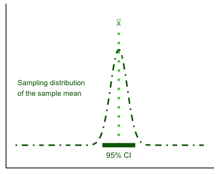
Decision rule:
- If \(\mu_0\) lies inside the CI bar, we fail to reject \(H_0\).
- If \(\mu_0\) lies outside the CI bar, we reject \(H_0\) at \(\alpha=0.05\).
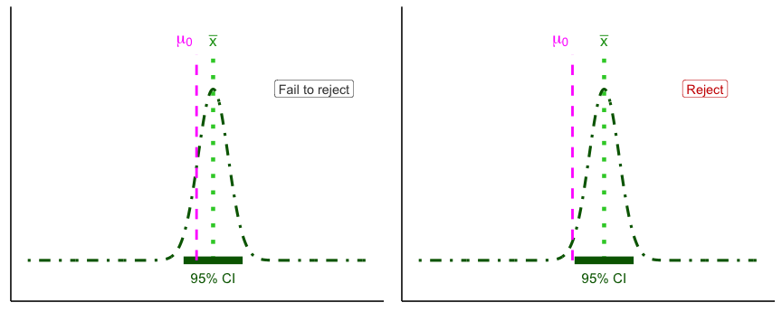
In the right panel, the target of 12 µg/m³ is only 2.1 µg/m³ from \(\bar{x}\), about 0.35 population standard deviations, so a single day at 12 µg/m³ would be unremarkable. It is not a plausible value for the mean, because sample means vary less than individual readings do. Measured in standard errors, the same distance is 2.10, beyond the 1.96 that bounds the 95% interval.
For the \(z\) test in this chapter, a two-tailed test of \(H_0:\ \mu=\mu_0\) at level \(\alpha\) reaches the same decision as checking whether \(\mu_0\) lies inside the \(100(1-\alpha)\%\) confidence interval. At \(\alpha = 0.05\), that is the 95% interval. The CI shows both the decision (reject or not) and the range of parameter values still consistent with the data.
4.4.6 Route 3: \(p\)-value
The \(p\)-value is an area under the curve, so it comes from pnorm(), which Chapter 3 introduced as the area to the left of a value. For the PM2.5 example’s \(z = 2.10\) in Figure 4.16, pnorm(-2.10) gives the area below \(-2.10\), about 0.018, which by symmetry equals the area above \(+2.10\). A two-tailed test counts both tails, so \(p\) = 2 * pnorm(-2.10) \(\approx 0.036\). Reject if \(p<\alpha\). Here \(0.036 < 0.05\), so we reject.
![A blue dot-dash standard normal curve centered at zero, marked with a magenta dashed vertical line at the center for the null value and a lime-green dotted vertical line further right labeled 'observed z' at about 2.1. The areas beyond plus and minus 2.1 in both tails are shaded gray. Red vertical lines at plus and minus 1.96, solid up to the curve and thin dashed above it, mark the critical values, a little closer to the center than the start of the gray shading. Text on the left reports a two-tailed p-value of 0.036, labeled reject.](04-Foundation_Inference_files/figure-html/fig-4pvalue-lens-1.png)
A \(p\)-value is a conditional probability. Chapter 3 introduced conditional probability and its notation, \(P(A \mid B)\), which puts the event you are asking about to the left of the bar and the condition you already know to the right. A \(p\)-value has exactly that form:
\[p = P(\text{a statistic at least this extreme} \mid H_0 \text{ is true})\]
To the right of the bar is what you have assumed, that \(H_0\) is true. To the left are the data. The \(p\)-value is the probability of data at least as extreme as yours if \(H_0\) is true.
Flipping the bar gives a different probability. In Chapter 3’s stream example, flipping the two sides of the bar turned \(P(\text{exceed} \mid \text{heavy rain}) = 0.60\) into \(P(\text{heavy rain} \mid \text{exceed}) = 0.30\). Here, it is tempting to read \(p = 0.036\) as “a 3.6% chance the null is true.” That is a different conditional probability, and a test cannot give it to you:
| Probability | What it means | Does a test give it? |
|---|---|---|
| \(P(\text{data this extreme} \mid H_0 \text{ true})\) | How often chance alone produces data like yours, if \(H_0\) holds | Yes, this is the \(p\)-value |
| \(P(H_0 \text{ true} \mid \text{data})\) | How likely the null is, given what you observed | No |
A \(p\)-value keeps \(H_0\) to the right of the bar, the way \(P(\text{exceed} \mid \text{heavy rain})\) keeps heavy rain there. The test assumes \(H_0\) and asks how unusual the data would be under it. It never computes how likely \(H_0\) is. In this book, \(H_0\) is treated as a fixed fact about the population, either true or false. A fixed fact has no probability attached to it, so the test cannot report one for \(H_0\). In the PM2.5 example, \(p \approx 0.036\) means that if \(H_0\) were true, a statistic at least 2.10 standard errors from \(\mu_0\) in either direction would turn up about 3.6% of the time. It does not mean there is a 3.6% chance that \(H_0\) is true.
4.4.7 Reject or fail to reject
Test outcomes are binary: we either reject \(H_0\) or fail to reject \(H_0\). Failing to reject never means the effect is zero. It means this design did not separate the effect from chance. We never accept \(H_0\), because sampling variability means we can’t prove it’s true. We can show only that the data are consistent with it. Similarly, we don’t formally accept \(H_a\), but we can say the results provide support for \(H_a\) when \(H_0\) is rejected.
Report the exact \(p\) and the confidence interval. For the PM2.5 example, that is \(p = 0.036\) and 95% CI [12.14, 16.06] µg/m³. Chapter 5 adds effect size to this list.
A two-tailed test has two possible outcomes. The two figures below use invented samples, one far from \(\mu_0\) and one close to it, to show each outcome.
- Reject the null hypothesis (two-tailed test). The sample mean falls beyond the critical values, in the rejection region. The confidence interval also excludes the null mean. In Figure 4.17, \(\bar{x}\) is 3.75 standard errors from \(\mu_0\) (\(z = -3.75\)), well past the critical values of \(\pm 1.96\), and the two-tailed \(p\)-value is below 0.001, far below \(\alpha = 0.05\). All three routes say reject.
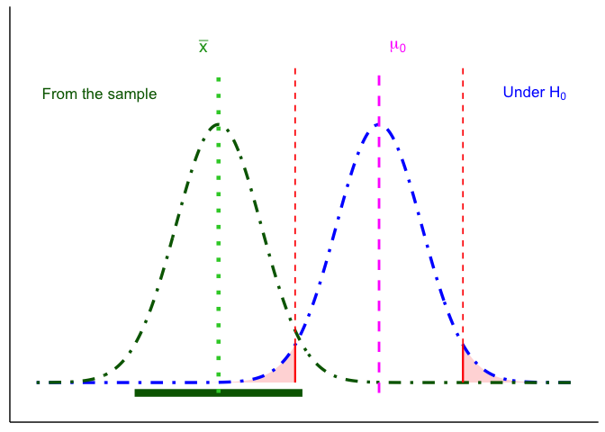
- Fail to reject the null hypothesis (two-tailed test). The sample mean falls in the non-rejection region, and the confidence interval includes the null mean. Here \(\bar{x}\) is 1 standard error from \(\mu_0\) (\(z = -1.00\)), inside the critical values, and the two-tailed \(p\)-value is 0.32, above \(\alpha = 0.05\). All three routes say the evidence is consistent with chance variation, so we fail to reject \(H_0\).
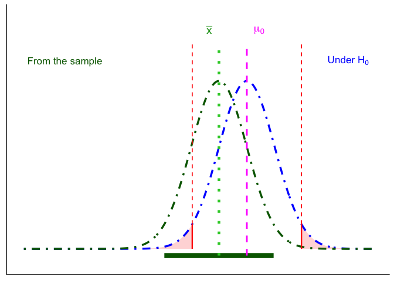
CautionWarning: A significant result does not say what caused it
Every hypothesis test in this book asks one question, whether chance alone could have produced this result. Other methods start from two or more candidate explanations, say a steady linear decline versus a sharp threshold response, and ask which one the data support better.
Rejecting chance as the explanation tells you that something is going on, but not always what.
Table 4.7 collects the one-sample \(z\)-test on one card.
| Purpose | Compare a sample mean to a reference value \(\mu_0\) when the population SD \(\sigma\) is known, for example from a long monitoring record |
| Hypotheses | \(H_0: \mu = \mu_0\), \(\quad H_a: \mu \neq \mu_0\) |
| Assumptions | \(\sigma\) known, and the sampling distribution of the sample mean approximately normal (a normal population, or \(n\) large enough, Chapter 3) |
| Test statistic | \(z = (\bar{x} - \mu_0)/(\sigma/\sqrt{n})\), compared with the critical values \(\pm 1.96\) at \(\alpha = 0.05\) (two-tailed), known before collecting data from the standard normal (about 2 by the 68-95-99.7 rule) |
| Report | \(\bar{x}\), 95% CI, \(z\), \(n\), \(p\) |
4.5 One- and two-tailed tests
\(H_a\) says where the true population mean could be if it does not equal \(\mu_0\). A two-tailed alternative says it might be below \(\mu_0\) or above it. A one-tailed alternative says it can only be on one side (Figure 4.19).
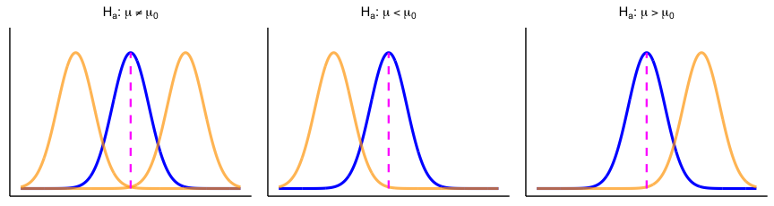
The test builds in those claims by where it places \(\alpha\). A two-tailed test splits \(\alpha\) between both tails of the sampling distribution of the sample mean under \(H_0\). A one-tailed test puts all of \(\alpha\) in the one tail \(H_a\) points toward (Figure 4.20).
![Two panels, each a blue dot-dash bell curve centered on a magenta dashed line. Left panel, titled two-tailed with an arrow pointing both ways: small red shaded areas in both tails beyond red vertical lines labeled -crit = -1.96 and +crit = 1.96. Right panel, titled one-tailed with an arrow pointing right: a single, larger red shaded area in the right tail beyond a red vertical line labeled +crit = 1.645, which is closer to the center than 1.96. Each red line is solid up to the curve and thin dashed above it.](04-Foundation_Inference_files/figure-html/fig-4tails-1.png)
4.5.1 One- or two-tailed: which and why?
Use this rule of thumb:
- Two-tailed (default): You care whether \(\mu\) differs from \(\mu_0\) in either direction.
- One-tailed (only if justified): Differences in the opposite direction are scientifically irrelevant and would not change your decision or action.
Default to two-tailed unless a difference in the other direction would not change your decision or action. Chapter 5 turns the second bullet, whether a result in the other direction would change your action, into a question you can answer before collecting data.
At \(\alpha = 0.05\), a one-tailed test’s critical value is 1.645 instead of 1.96, so it rejects on less evidence, but only in the direction you named in advance. If the effect goes the other way, a one-tailed test cannot detect it at all, however large it is. Most studies should not give that up, because a result in the unexpected direction is often the most useful thing a study finds.
Choose the direction before you see the data. Picking the tail afterward, because it gives the smaller \(p\)-value, makes your actual chance of a Type I error, rejecting a true \(H_0\), higher than the \(\alpha\) you report.
4.6 Chapter Summary
Why it matters. This chapter connects describing data to drawing conclusions from it. Every test after this point follows the same steps: work out what chance alone could produce, then ask whether your result is rare enough under chance, by a standard set in advance (\(\alpha\)), to reject chance as the explanation.
Core ideas
- Chance produces differences on its own. Split one population into two arbitrary groups and their means will differ anyway, from sampling error alone. The question to ask is whether the difference is bigger than chance can account for.
- You can build the chance window. The chance window is the distribution of results that chance alone produces when a study with no real effect is repeated many times. Simulating thousands of replications shows what chance can produce for a study with that design and sample size.
- Rarity is a judgment, and it needs a convention. The 100-year flood uses the same reasoning outside statistics. A 1% annual chance is small, but over a 30-year mortgage it adds up to about a 26% chance. \(\alpha = 0.05\) standardizes that judgment so researchers do not each draw their own line.
- A hypothesis test is the practical shortcut. Once you can assume the sampling distribution of the sample mean under \(H_0\) is normal, the simulated chance window becomes a curve and the decision becomes a calculation, with the same logic as the simulation.
- One pair of curves comes from the sample and one from \(H_0\). From the sample: the estimated population distribution and the sampling distribution of the sample mean from the sample, which gives the confidence interval. Under \(H_0\): the null population distribution and the sampling distribution of the sample mean under \(H_0\), which gives the critical values and \(p\)-value. The true population distribution is never known.
- Three routes give the same decision. A test statistic against a critical value, a confidence interval, and a \(p\)-value are three ways of asking the same question. For the two-tailed \(z\) test at the same \(\alpha\), they always agree.
- Commit to one- or two-tailed in advance. Default to two-tailed. Choosing after seeing the data raises your actual error rate above the \(\alpha\) you claimed.